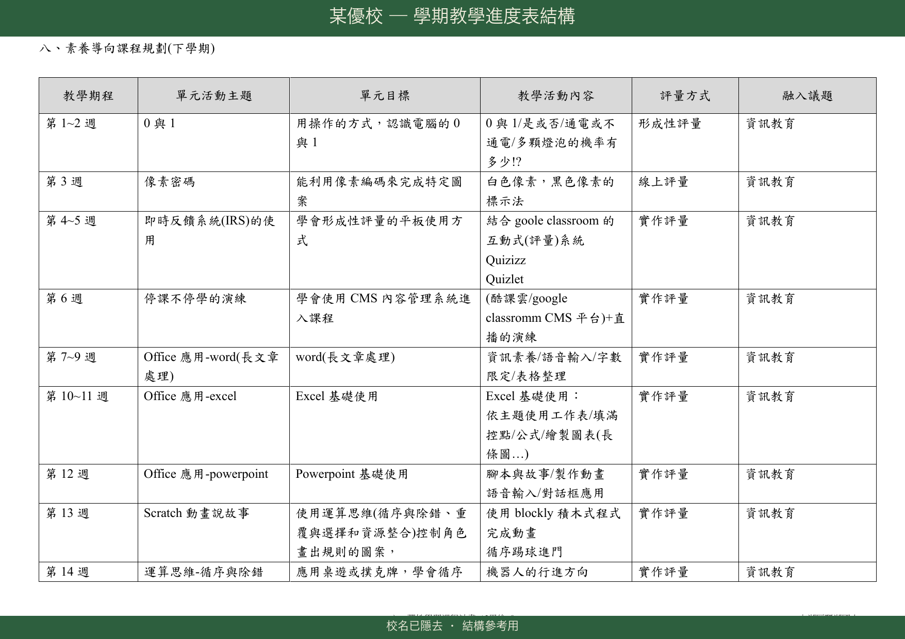

共備工作坊
從看懂審查邏輯，到寫出合格的課程計畫
WEDNESDAY · 09:00–12:00
港湖區 第二場
時代變了，
電腦課的定位也變了。
資訊教育的目標，從「被動接收特定軟體技能」轉為「以工具主動解決真實問題」。
- · 背誦鍵盤按鈕
- · 反覆練習打字速度
- · 單向學習特定軟體操作
- · 學習解決生活中的真實問題
- · 把腦中點子變成實體作品
- · 培養帶得走的運算思維
19 校無一全過
港湖區 19 所國小（內湖 + 南港）全部都有不符合項目，每校 2 至 11 項不等。
不是港湖特別弱 — 全市都同樣痛。
SCHOOLS WITH ZERO VIOLATIONS
| # | 檢核碼 | 不符合率 | 主要錯誤 |
|---|---|---|---|
| 1 | 3-2-2 | 62.9% | 議題融入欄誤填「資E／科E」 |
| 2 | 4-1-1 | 46.5% | 評量與特定領域雷同 |
| 3 | 3-2-1 | 39.0% | 資議／科議錯置議題融入欄 |
| 4 | 2-2-3 | 35.8% | 學習重點未用參考說明 |
| 5 | 3-1-2 | 30.8% | 所跨領域前後不一致 |
共同問題＝共同解法。今天就把這 14 題練到閉眼能答對。
釐清座標 — 國小資訊教育的真實位置
資訊在「部定」與「校訂」中的角色截然不同。所有 14 項錯誤的根源都從這條分界線開始。
資訊 = 客（被融入的議題）
- · 國家統一規劃
- · 國小無「資訊科技」部定領域
- · 資訊以「議題」形式融入各領域
資訊 = 主（主體領域）
- · 學校自行規劃
- · 國小資訊科技唯一合法位置
- · 資訊本身為主體，可跨域他者
校訂資訊課是 第②類議題主題式。
教育部對議題的實施分為三種。認清資訊校訂課程屬第②類，是理解 14 項錯誤的根源。
現有領域融入 19 項議題之一
部定領域課程
（國 / 英 / 數…）
以單一議題為主體的主題課程
校訂資訊科技課程即此類
跨領域獨立特色課程
其他類型校訂課程
資訊在哪片葉子？
資訊科技校訂課程的落腳點是「統整性主題／專題／議題探究課程」 — 採議題主題式安排。空白表 v4.1「計畫說明一」勾的就是這項。
CHECKPOINT — 計畫說明一須勾選此項
-
統整性主題／專題／議題探究
↳ 資訊科技校訂課程在此 - 社團活動與技藝課程
- 特殊需求領域課程
- 其他類課程
部定 vs 校訂 — 指標來源不同
分清楚這個，後面 2-1-1 就不會再錯。
| 部定課程（各領域） | 校訂課程（資訊彈性學習） | |
|---|---|---|
| 課綱依據 | 各領域領綱 | 總綱 + 科議／資議參考說明 |
| 資訊地位 | 被融入的議題 | 主體領域（以資訊為主體，可跨域） |
| 核心素養 | 領綱層級國-E-A1 ← 前面有領域名稱 | 總綱層級E-A1 ~ E-C3 ← 前面沒有領域名稱 |
注意「核心素養」那一格的差異 — 部定有領域字首，校訂沒有。後面 2-1-1 會回到這個。
「資訊教育」這四個字，
用在哪裡決定它代碼長什麼樣。
資訊是「議題」融入式
第①類 · 用 資 E1、資 E8
資訊是「主題」（主體）
第②類 · 用 資議 a-Ⅱ-1
「資議／科議」 vs 「資 E／科 E」
兩組代碼長得很像，但用途完全不同 — 全份簡報的代碼系統地基。
| 符號 | 全名 | 用途 | 出現欄位 |
|---|---|---|---|
資議 a-Ⅱ-1 | 資訊教育參考說明（第 2 階段） | 校訂資訊課的學習指標 | 學習重點欄 ✓ |
科議 t-Ⅲ-2 | 科技教育參考說明（第 3 階段） | 校訂資訊課的學習指標 | 學習重點欄 ✓ |
資 E1、資 E8 | 資訊教育實質內涵代碼 | 部定課程融入資訊議題 | 議題融入欄（部定才用） |
科 E4、科 E6 | 科技教育實質內涵代碼 | 部定課程融入科技議題 | 議題融入欄（部定才用） |
階段對應，
看到 -Ⅳ- 就是錯。
國小最高用到 -Ⅲ-（5-6 年級）。三年級寫 資議 a-Ⅱ-1 對，寫 a-Ⅳ-1 就越級了。
→ 對應檢核 2-2-2 階段一致性
| 階段 | 年級 | 代碼 | 範例 |
|---|---|---|---|
| 第 Ⅰ 階段 | 1-2 年級 | -Ⅰ- | 資議 a-Ⅰ-1 |
| 第 Ⅱ 階段 | 3-4 年級 | -Ⅱ- | 資議 t-Ⅱ-1 |
| 第 Ⅲ 階段 | 5-6 年級 | -Ⅲ- | 資議 p-Ⅲ-2 |
| 第 Ⅳ 階段 | 國中 7-9 | -Ⅳ- | 國小不能用 ✕ |
課程名稱必須跨域 + 素養導向。
為什麼這條規定？
校訂課程要跨域，不是單一領域的延伸。一眼看得出「這是電腦課」就不是校訂課程了 — 應該直接併入部定課程或節數。
白話翻譯
- 不能：等於某個領域名稱、或只有領域性文字
- 要做：能看出跨域精神 + 素養導向
命名診斷室
- 電腦課・資訊課 （純領域名）
- Word 排版技巧 （軟體名）
- PowerPoint・威力導演・Scratch （軟體名）
- Mblock （軟硬體名）
- 數位小達人
- 我的數位圖書館 （跨：語文）
- 智慧生活探究 （跨：生科）
- 科技與邏輯・數位悠遊
- AI 思維 （內湖良範例）
「五年級『Mblock』直接使用軟體（Mblock）或硬體（mBot）名稱 — 不符合素養導向的命名原則。」
課程理念不能僅描述單一領域之精神。
為什麼？理念是源頭
「理念」是整份計畫的精神指南針。若理念只談資訊，那學習重點、教學活動、評量都會往單一領域靠 — 後面全錯。
理念範例 — 錯與對
「本課程旨在培養學生資訊素養，學習電腦基本操作、文書處理與網路使用，提升學生數位能力。」
↳ 評語：完全無跨域精神 ─ 退件
「本課程以資訊科技為主體，依學校「健康、希望、關懷、卓越」四大願景，結合國語文、數學、自然、藝術等領域學習重點，培養學生運算思維、數位表達、跨域協作能力，引導學生以資訊工具探索世界、解決生活問題。」
「課程設計理念雖提到結合 STEAM 理念，但整體敘述仍偏重在『科技積木創作』等資訊科技教育，建議應呈現跨域之精神。」
核心素養必須完整呈現「總綱層級」三要素
E-B2），不能填科技領綱層級（如 科-J-A1）。2026-04-24 南港場新共識
- 階段碼 — E（國小）／ J（國中）／ U（高中）
國小校訂課程只能用E。 - 總綱代碼 — A1～C3（三面九項）
- 階段敘述 — 每階段敘述不同，須整段抄上，不可只抄 10 字短標題。
B2「科技資訊與媒體素養」三階段對照
| 階段 | 代碼 | 敘述（須整段抄） |
|---|---|---|
| 項目層 | B2 | 具備善用科技、資訊與各類媒體之能力，培養相關倫理及媒體識讀的素養。 |
| 國小 | E-B2 | 具備科技與資訊應用的基本素養，並理解各類媒體內容的意義與影響。 |
| 國中 | J-B2 | 具備善用科技、資訊與媒體以增進學習的素養… |
| 高中 | U-B2 | 具備適當運用科技、資訊與媒體之素養… |
「部分核心素養欄位直接填寫科技領域領綱層級的指標（如 科-E-A2），應修正為總綱層級指標（如 A2 系統思考與解決問題）。」
「多處使用領域領綱層級的核心素養（如 健體-E-C1），應統一使用總綱層級指標。」
學習重點不能只有資議／科議。
每學期至少一個單元跨域。
為什麼？
校訂課程一定要跨域。若所有單元學習重點只標資議／科議，形同自成一格的資訊課，違反校訂本意。
白話
- 學習重點欄只列資議、科議
- 每學期至少 1 單元有「資議／科議」以外的領域指標
某單元同列「資議 + 其他領域」
「4 個單元裡有 1 個跨域就 OK，其他 3 個沒跨沒關係；目前的寬度是這樣，之後越收越窄再調整。」
- 至少一個單元同時出現資議／科議和其他領域
- 不是每個單元都是純資訊指標
- 非跨域單元不硬湊跨域評量
指標代碼必須嚴格對應領域與學習階段。
核心素養欄寫了某領域，學習重點欄就要有該領域的指標。
核心素養 → 學習重點
國小只用 -Ⅰ-、-Ⅱ-、-Ⅲ-，看到 -Ⅳ- 就是錯（國中代碼）。
3 年級 → only -Ⅱ-
階段／領域對不齊，
抄再多指標都會錯。
核心素養：國小三年級 學習內容：運 t-Ⅳ-1（國中階段指標）
核心素養：國-E-A3（國語文） 學習重點：全部是藝、健體
- 3 年級 → 用
-Ⅱ-指標 - 核心素養列哪個領域，學習重點就對應該領域
SELF-CHECK
- 1-2 用 Ⅰ；3-4 用 Ⅱ；5-6 用 Ⅲ；全部無 Ⅳ
- 核心素養領域與學習重點領域對齊
學習重點以精細的「參考說明」為本。
| 代碼 | 來源 | 用途 |
|---|---|---|
資 E1、科 E4 | 議題手冊 | 部定融入議題 |
資議 a-Ⅱ-1 | 參考說明 | 校訂主體課程 |
| a | 資訊科技與人類社會 |
| t | 運算思維與問題解決 |
| p | 演算法 |
| d | 資料表示與處理 |
| k | 系統平台 |
⚠ 「a」是「人類社會」非「社會領域」
資 E1 → 資議 a-Ⅱ-4，差不多？
用途完全不同。
學習內容：資 E1（認識常見的資訊系統）
↳ 議題手冊「實質內涵」 — 部定才用
學習內容：資議 a-Ⅱ-4（辨識資訊科技在生活中的應用情形）
↳ 參考說明「學習指標」 — 校訂主體用
「計畫中大量使用議題手冊的『實質內涵』代碼（如：科-E-A1、資 E1）取代應有的『學習重點』代碼（如：資議 a-Ⅲ-2）。」
「完全缺少『參考說明』的正式編碼，且在『議題融入』欄位誤用議題手冊代碼（資 E…）。」
藍框：學習重點欄缺資議／科議。

藍框內：學習表現／學習內容欄填了「資 E1、資 E5、資 E8」這類議題實質內涵代碼。校訂課程應改用「資議 a-Ⅱ-X、科議 t-Ⅱ-X」參考說明代碼。
資議／科議指標必須併呈於學習重點欄，
不可獨立另開一欄。
為什麼？
校訂課程中資訊是「主體領域」，它的指標就該和其他跨域領域指標平行並列。另開一欄等於宣告「這些是額外的」，與主體地位矛盾，也常造成下一個錯誤 3-2-1（資訊指標跑到議題融入欄）。
3-2-1 是一組的 — 表格欄位設計錯，資議指標就跑到不該去的地方。表格設計 — 把資議「併」進來
| 學習表現 | 學習內容 | 參考說明 | 議題融入 |
|---|---|---|---|
國 6-Ⅱ-1 | 國 Ac-Ⅱ-1 | 資 E1 | 安 E5 |
| 學習表現 | 學習內容 | 議題融入 |
|---|---|---|
國 6-Ⅱ-1 ／ 資議 a-Ⅱ-1 | 國 Ac-Ⅱ-1 ／ 資議 d-Ⅱ-2 | 安 E5 |
- 表格沒有「參考說明」或「資訊指標」專屬欄
- 資議／科議寫進「學習表現／學習內容」中
不能只有形式跨域，
教學目標／活動／內容也要跨。
為什麼？
形式跨域不等於實質跨域。若只是表頭漂亮、教學沒跨，課程仍是單一領域。
白話
- 表頭跨國語，教學活動全部「Scratch、鍵盤」
- 教學目標／活動／內容實際出現該領域
「打字小達人」單元 — 跨國語
教學目標：能正確使用鍵盤輸入英文 教學活動： 1. 打字練習軟體 2. 英文單字打字 3. 測驗 （全部都是資訊活動，沒有國語）
教學目標：能用鍵盤輸入國語短文，並依段落格式排版
教學活動：
1. 打字基礎練習
2. 輸入「自我介紹」短文，分段、標點呈現
3. 互評同學作品的格式美觀度與錯字
教學內容：既包含資訊（打字、排版）
也包含國語（作文格式、標點）
- 每個跨域單元的教學活動中，都能找到「該跨域領域」的實際內容
五個面向所跨領域要一致。
為什麼 30.8% 的學校踩這條？
老師寫核心素養時想得很大，但實際設計教學活動時只能跨一兩個。建議：核心素養寫保守一點，跟你真正會做的對齊。
表頭跨什麼，活動就要做什麼。
核心素養：C3 多元文化（社會）
學習重點：社 3b-Ⅱ-1、藝 1-Ⅱ-6
教學活動：用 Scratch 畫簡單動畫
（資訊 + 藝術，沒有社會）
核心素養：E-B2、E-C3 + 社-E-C3 學習重點：資議 a-Ⅱ-4、社 3b-Ⅱ-1 教學目標：用網路搜尋臺北地理資料整理 教學活動：Google Maps 規劃參觀路線 教學內容：資訊（網路搜尋）+ 社會（地理認知）
- 同一單元 5 個面向都指向同樣 1-2 個跨域領域
教材名稱不能是廠商書籍名稱。
直抄廠商書名等於宣告「這只是廠商教材的延伸」 — 工具軟體名稱（Scratch、Canva）OK。
| 錯誤（特定廠商 · 真實案例） | 正確（通用描述） |
|---|---|
Windows10 電腦入門 | 電腦基礎操作教材 |
小石頭 PowerPoint 2019 | 簡報製作教材 |
Word 文書超簡單 | 文書處理教材 |
宏全版 Scratch 3 小創客寫程式 | 程式設計工具 |
翰林版國語第 5 冊 | 國語文教材相關單元 |
康軒數學 1-6 年級 | 國小數學領域教材 |
快樂小導演 - 威力導演 2025 | 影音剪輯軟體 |
均一教育平台 ／ 因材網 | 教育部數位學習平台 |
Scratch、Canva、Chrome、Google Maps 等通用工具軟體名稱可以直接寫，因為是技術名稱不是「教材／書籍」。
「『資訊素養與倫理第五版』可能指向特定書籍，建議改為『資訊素養與倫理相關教材』。」
單元名稱不能直接抄錄教科書內容。
本教科書
個單元名比對資料庫
| 判定 | 結果 |
|---|---|
| 完全相同 | 不符合 ✕ |
| 高度相似（僅換標點、加空格） | 建議修改 ⚠ |
| 概念相近但名稱差很多 | 通過 ✓ |
「我是小畫家」vs「我是天才小畫家」 ─ 高度相似，會被抓。要改就要大改。
「資議／科議」（中間有議字）
建議置於學習重點欄，不能放議題融入欄。
3-2-1 規範的是「資議／科議」（參考說明，校訂課用） ─ 該放學習重點欄。
「資 E ／ 科 E」（議題實質內涵，部定課用）由 3-2-2 處理 ─ 校訂資訊課任何欄位都不該出現。
把資議從議題融入欄搬回學習重點欄
議題融入： 資議 a-Ⅱ-1 科議 t-Ⅲ-2
↳ 資議跑到不該去的地方
學習重點： 學習表現：資議 a-Ⅱ-1、國 6-Ⅱ-1 學習內容：資議 d-Ⅱ-2、國 Ac-Ⅱ-1 議題融入： 安 E5、品 E1（19 項議題裡除資訊／科技以外）
「本計畫全面性地將科技／資訊議題的實質內涵代碼（如 科E3、資E2、資E5）錯置於『融入議題』欄位中。」
「在『議題融入實質內涵』欄位中，填入了應屬於『學習重點』的資訊教育議題實質內涵代碼（資 E…、科 E…）。」
- 議題融入欄沒有「資議／科議」字樣
- 學習重點欄有「資議／科議」+ a/t/p/d/k
最大的魔王關
SCHOOLS WITH 3-2-2 VIOLATION
部定資訊融入國語 ✓ 主客分明
校訂資訊融入資訊 ✕ 主客相同 — 邏輯混亂
RULE OF THUMB ─ 校訂資訊課議題融入欄不會出現「資 E、科 E」
合法 18 項議題（4 + 14）
自己融自己
與資訊內涵重疊
安全（交通安全） ／ 性別平等 ／ 戶外教育
性別平等 ／ 家庭教育 ／ 全民國防 ／ 環境
⚠ 「全民國防」非舊名「國防教育」 ／ 紅框＝115 上學期必填
橘框：議題融入欄不能融入自己。

橘框內：議題融入欄填了「資 E1、資 E2、資 E11、資 E12、資 E13」。校訂資訊課中資訊已是主體，**領域不能融入自己**；議題融入欄只能填 18 項議題（已扣除資訊／科技）。
一次修正可消 5 題 — 最划算的一張。
議題融入欄寫了一堆「資 E1、資 E8」 + 學習重點裡完全沒有資議／科議 — 這個典型錯誤連帶違反 5 項：
| 違反項 | 為什麼也錯 |
|---|---|
2-2-1 | 學習重點只有其他領域、沒有資議／科議 |
2-2-3 | 用了資 E 而非資議參考說明 |
2-2-4 | 資議獨立放議題融入欄 |
3-2-1 | 資議錯置於議題融入 |
3-2-2 | 議題融入誤填資 E |
- 把議題融入欄所有「資 EX／科 EX」全部刪除。
- 查《參考說明》，改寫為對應的「資議 a/t/p/d-Ⅱ/Ⅲ-X」代碼。
- 這些「資議」代碼寫進學習重點欄，與其他領域指標平行排列。
- 議題融入欄只保留 18 項合法議題。
20-40 字的質性敘述才是。
紫框：「實作活動」「上課發表」不是評量。

紫框內：評量規準只列「實作活動／上課發表／作品優異」三件套類別標籤。應改為跨域 20-40 字描述，**同時對應資訊與所跨領域的學習表現**。
告別「三件套」 → 20-40 字黃金法則
- · 口頭發表
- · 實作活動
- · 學習態度
↳ 只是評量「方式」，缺乏評量「內容」
【資訊表現】+【跨域目標】+【20-40 字】
原版 ✕ 能夠操作基本的繪圖軟體繪製圖形。
進化 ✓ 能操作繪圖軟體繪製圖形，
展現自己的美學經驗與創意。
五級規準同時涵蓋兩領域表現。
規準：運用圖文工具製作 3 段祝福語，版面整齊、文字通順
| 等第 | 表現描述 |
|---|---|
| 表現優異 | 版面設計具創意、3 段祝福語皆通順且無錯字 |
| 表現良好 | 版面整齊、3 段祝福語大致通順、僅 1-2 個錯字 |
| 已做到 | 能完成 3 段祝福語，版面清楚 |
| 還要加油 | 只完成 1-2 段祝福語 |
| 努力改進 | 未能完成祝福語撰寫 |
- 敘述含「資訊」+「所跨領域」兩方面表現
- 每條 20-40 字
紅框 + 橘框同頁：問題從錯置代碼蔓延。

**紅框** = 核心素養誤用「科-E-A1」國中科技領綱（2-1-1）；**橘框** = 議題融入欄誤填「資 E1～13」（3-2-2）。同源錯誤連動，照前頁四步修正一次解決。
麗湖國小「AI 思維」為何拿滿分
內湖在地、可直接借鑑。檔案位於 114學年度_內湖南港區/.../麗湖國民小學/
- 命名精準 ─「AI 思維」不含任何領域學科名稱。
- 總綱飽滿 ─ 列出 5 項核心素養（A2／A3／B1／B2／C2），不僅止於 B2。
- 四域融合 ─ 領綱涵蓋自然、藝術、數學、國語（如
自-E-B1、藝-E-B2、數-E-A2、國-E-C2）。 - 雙重指標 ─ 學習表現／內容完整並列資訊 + 跨域領綱。
- 完美溯源 ─ 總綱與領綱具備完美的下位對應邏輯（B1/B2 ↔ 自-E-B1/B2 + 藝-E-B2；A2/A3 ↔ 數-E-A2/A3；C2 ↔ 國-E-C2）。
六欄結構齊全、單元命名跨域。

六欄結構完整：教學期程／單元活動主題／單元目標／教學活動內容／評量方式／融入議題。單元名稱避開教科書（如「Excel 圖表」「Hour of code」）並結合**跨域**教學流程。
驗屍報告：3 案真實反面教材
核心素養誤填 科-E-A1/A2/B1/B2/B3（國小無科技領綱・2-1-1）
四年級誤用第三學習階段指標（如 資 A-Ⅲ-1，2-2-2）
改為總綱層級（如 A2 系統思考）；指標改為對應第二學習階段。
教材出現「Windows10 電腦入門」「小石頭 PowerPoint 2019」（廠商書名・3-1-3）
核心素養誤填 健體-E-C1 領綱（2-1-1）
教材改「電腦基礎操作教材」；核心素養改 E-C1 總綱完整敘述。
大量使用議題實質內涵代碼（科-E-A1、資 E1）取代學習重點（2-2-3）
學習表現／學習內容分為兩獨立欄位，未併呈（2-2-4）
指標改 資議 a-Ⅲ-2；併入單一「學習重點」欄位。
這 3 案來自全市 172 筆真實審查資料，均為內湖區踩坑 ─ 非個案、是常態。14 項全錯反面教材檔：14項全錯反面教材_v4.1.docx
最後一哩路 — 自我檢核清單
- 課程與單元名稱沒有出現「電腦、資訊、英語」等學科文字？
- 核心素養是否使用「總綱指標 E- 完整敘述」（如
E-B2 具備科技與資訊應用的基本素養…）？ - 每學期是否至少有一個跨領域單元？
- 指標編碼是否嚴格符合國小階段（資議／科議用 Ⅱ 或 Ⅲ），沒有出現國中代碼（J、Ⅳ）？
- 課程內容與進度是否非直接抄錄坊間教科書？
GEM v2 — 雙模式工作流
從零開始建構
AI 自動生成草案，80% 寫出來不合審查
↳ 僅供「想看其他學校怎麼寫」參考
模擬教育局審查流程
精準揪出指標錯置、跨域不足、非法命名 + 提供逐條修正建議
↳ 4 步驟：上傳 → 啟動 → 排序修復 → 迭代清零
十二年國教 課綱專家
換你們
開電腦。
請打開你們自己的課程計畫，
送進 GEM／NotebookLM —
看看能被抓出幾個不符合項目。
Nora & 成泰主任會在教室巡迴，隨時舉手問。
- 掃 QR 進 GEM
- 上傳課程計畫（Word／PDF／Google Doc）
- 輸入：「請幫我審查課程計畫！」
- 等 1-2 分鐘，看 AI 回報的不符合項目清單
- 按不符合率優先：
3-2-2 → 4-1-1 → 3-2-1 → 2-2-3 → 3-1-2 - 對照總綱原文 + 今天 slides 現場修改
- 改完再跑一次，直到清單清空
現在是最好的適應期。
- · 專家檢視各校計畫、蒐集錯誤樣態
- · 給予修正建議
- · 尚不強制退件修改
- · 必須全面符合 108 課綱規範
- · 加入 AI 應用與素養相關課程（2026-03-19 新教學綱要）
- · 嚴格把關
從解構到建構 — 高品質資訊科技教學
規則是手段，不是目的。目的是讓孩子在資訊課裡學到「解決問題的數位能力」。
不再是軟體操作
而是解決問題的數位能力。
資訊是橋樑
連結各學科的強大橋樑。
把時間還給教學
讓 GEM 處理繁瑣法規，把時間還給教學設計。
謝謝大家，
QA 時 間 🌿
- · 14 項檢核指標教學手冊 PDF
- · 14 項全錯反面教材 docx（v4.1）
- · 港湖區審查範例 Google Drive（46 校）
- · 李忠憲老師 GEM「校訂課程專家」
- · 永建校長林裕勝 AI agent 站